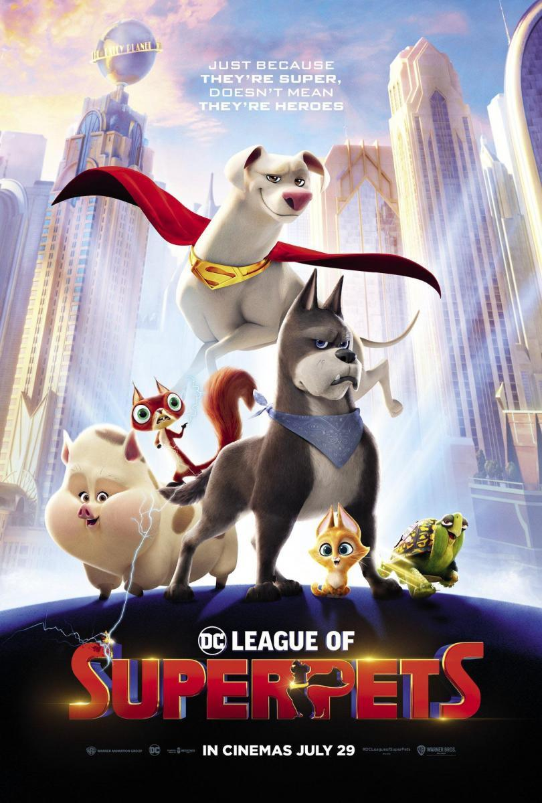
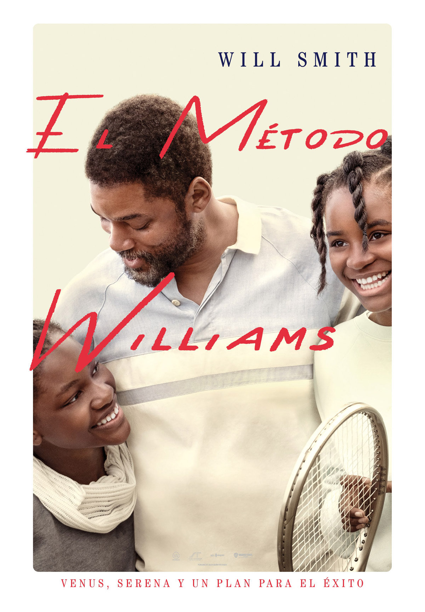
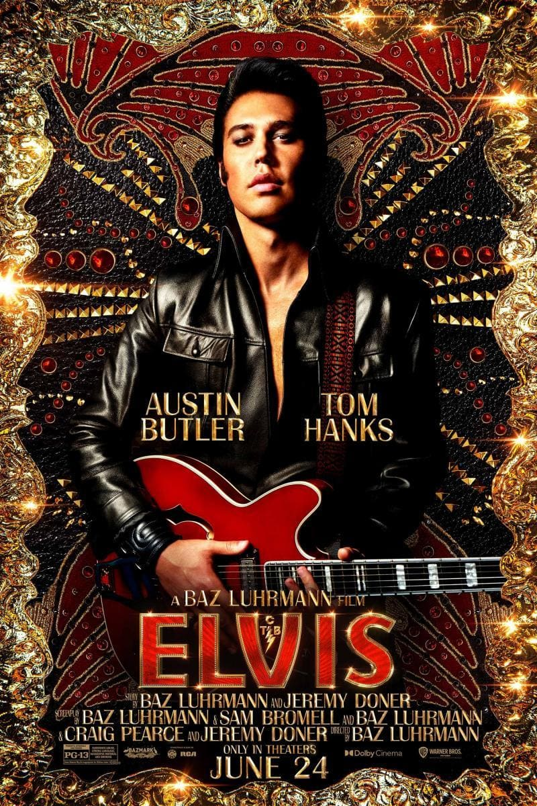

Un notable acercamiento al siempre completo tema de la maternidad
que es, por méritos propios, una de las mejores películas del cine
español de este 2022. La debutante Alauda Ruiz de Azúa sorprende
con un enfoque honesto y sentido que acierta tanto mostrando el
peso de la maternidad en una excelente Laia Costa como en su papel
como hija y la relación que mantiene con una también estupenda
Susi Sánchez.

DC Liga de Supermascotas
(2023)
DC Liga de Supermascotas
Los superhéroes nacieron como personas dirigidos a los más
pequeños de la casa, algo que ha ido perdiéndose con el paso del
tiempo. Aquí DC recupera ese espíritu con una simpática aventura
que no le va a cambiar la vida a nadie, pero sí que ofrece una
generosa dosis de diversión para toda la familia que invita a
dejarse llevar y pasar un rato sin pedirle peras al olmo.

El método Williams
(2021)
El método Williams
Biopic sobre Richard Williams, un padre inasequible que ayudó a
formar a dos de las deportistas más extraordinarias de todos los
tiempos, dos atletas que acabarían marcando época en el deporte
del tenis. Richard tenía una visión muy clara del futuro de sus
hijas, y sirviéndose de métodos arriesgados y poco convencionales,
elaboró un plan que llevaría a Venus y Serena Williams de las
calles de Compton, California, al olimpo del deporte,
convirtiéndolas en iconos del tenis.

Elvis
(2022)
Elvis
La película explora la vida y la música de Elvis Presley (Butler),
y su complicada relación con su enigmático agente, el coronel Tom
Parker (Hanks). La historia profundiza en la compleja dinámica
entre Presley y Parker que abarca más de 20 años, desde el ascenso
de Presley a la fama hasta su estrellato sin precedentes, en el
contexto del panorama cultural en los Estados Unidos. En el centro
de ese viaje se encuentra una de las personas más significativas e
influyentes en la vida de Elvis, Priscilla Presley (Olivia
DeJonge).
The Batman
(2022)
The Batman
Después de dos años acechando por las calles de la ciudad como
Batman (Robert Pattinson), e infundiendo miedo en las mentes
perversas de los criminales, Bruce Wayne está sumido en las
profundidades de las sombras de Gotham City. Este vigilante
solitario cuenta con pocos aliados de confianza y eso le ha
llevado a convertirse en la única encarnación de la venganza entre
sus conciudadanos. Cuando un asesino apunta a la élite de Gotham
con una serie de maquinaciones sádicas, un rastro de pistas
crípticas lleva a Batman a realizar una investigación en el
inframundo.